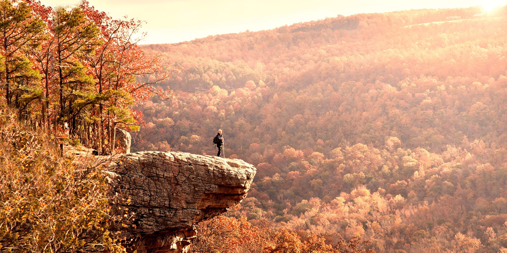
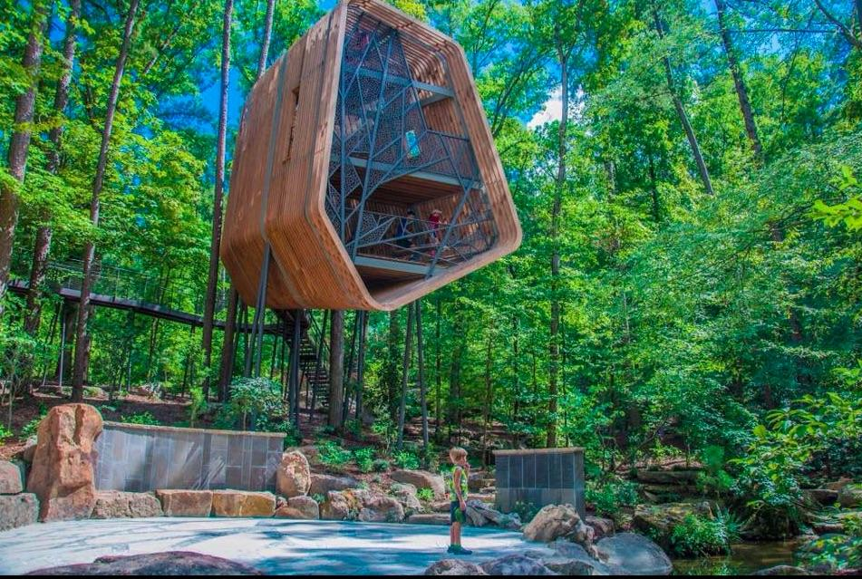

Whitaker Point
Tucked in the Ozark National Forest, Whitaker Point is a short 1.5 mile hike that leads to an incredibly rewarding view! The overlook offers a scenic view of lush mountains, and tops the list as one of the most beautiful places in Arkansas. I recommend either visiting at sunrise or sunset and bringing a picnic to enjoy the view. Check out my guide on hiking Whitaker Point and find out everything to expect.
Blue Springs Heritage Center
This attraction near Eureka Springs features crystal blue waters in a botanic garden setting. I think this is a beautiful spot, but the admission price is quite hefty ($13.75/adult) with very little to do.

Garvan Woodland Gardens
Garvan Woodland Gardens is a 210-acre botanical garden featuring several speciality gardens, a treehouse, and scenic overlooks. It is located in Hot Springs, Arkansas, so be sure to visit Hot Springs National Park while you’re in the area. It is a great way to spend an afternoon. Admission is $15/adult.

Kings River Falls Natural Area
Kings River Falls Trail features cascading waterfalls at the end of the trail! This natural area is also a refreshing swimming hole on a sunny day. The trail is incredibly scenic, and you’ll find beautiful viewpoints along the river on the way to the waterfall – definitely an Arkansas gem!